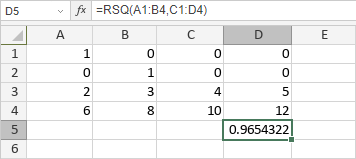

RSQ funkcija
RSQ funkcija je jedna od statističkih funkcija. Koristi se za vraćanje kvadrata Pearson-ovog koeficijenta korelacije proizvoda momenata.
Sintaksa
RSQ(known_y's, known_x's)
RSQ funkcija ima sledeće argumente:
| Argument | Opis |
|---|---|
| known_y's | Zavisni opseg podataka. |
| known_x's | Nezavisni opseg podataka sa istim brojem elemenata kao što sadrži known_y's. |
Napomene
Ako known_y's ili known_x's sadrži tekst, logičke vrednosti ili prazne ćelije, funkcija će te vrednosti ignorisati, ali će tretirati ćelije sa vrednostima nula.
Kako primeniti RSQ funkciju.
Primeri
Slika ispod prikazuje rezultat koji vraća RSQ funkcija.
